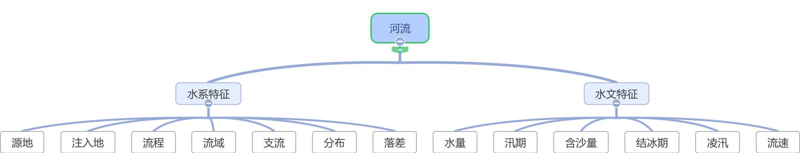
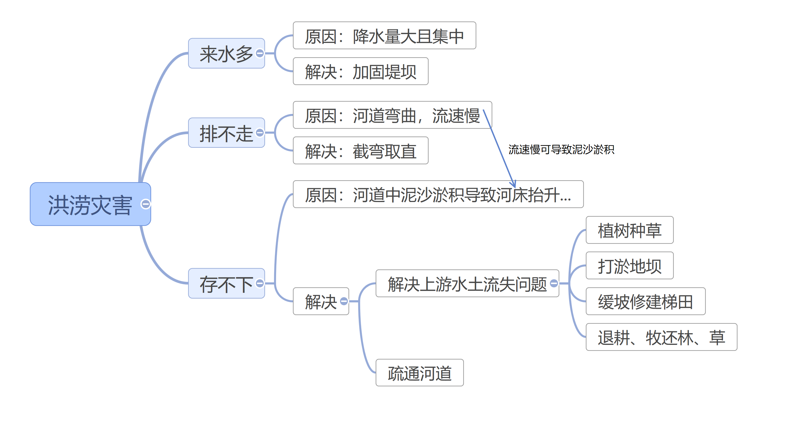

河流专题

|
流向 |
注入地 |
水量 |
汛期 |
含沙量 |
结冰期 |
| 描述方法 |
自_向_ |
海/湖... |
大/小 |
长/短
季节 |
大/小 |
有/无 |
| 影响因素 |
地势 |
地势 |
降水/高山冰雪融水/季节性积雪融水 |
降水 |
植被 |
气温 |
影响河流航运价值的条件
自然条件
- 地形是否平坦→水流是否平稳→通航条件好
- 降水量大、江宽水深→载重量大，河面容纳的船只多，通航能力强
- 气温高（e.g.一月气温＞0℃），无结冰期，通航时间长
- 干流长，支流多→通航里程长
社会经济条件
- 经济发达、人口多、城市密集→航运需求大
- 可以与铁路等联运
洪涝灾害
